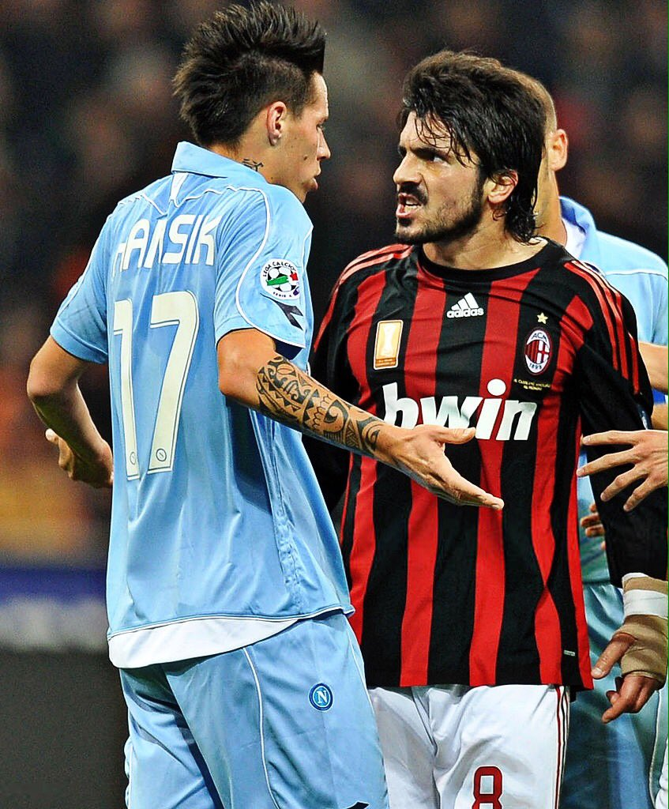
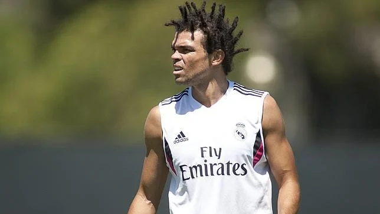
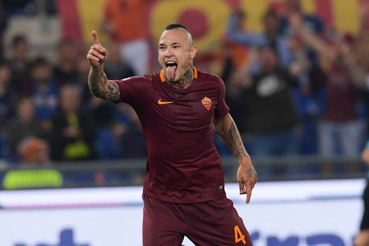
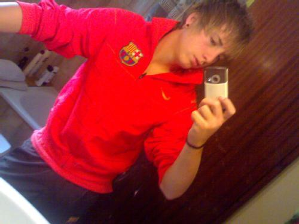
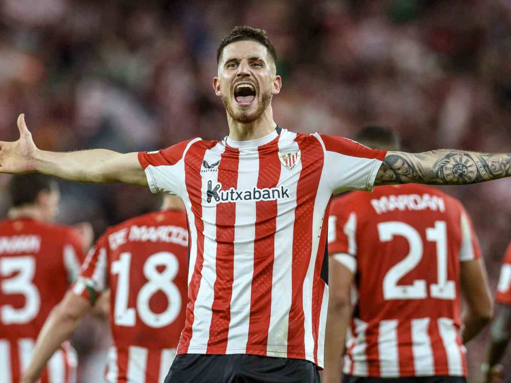
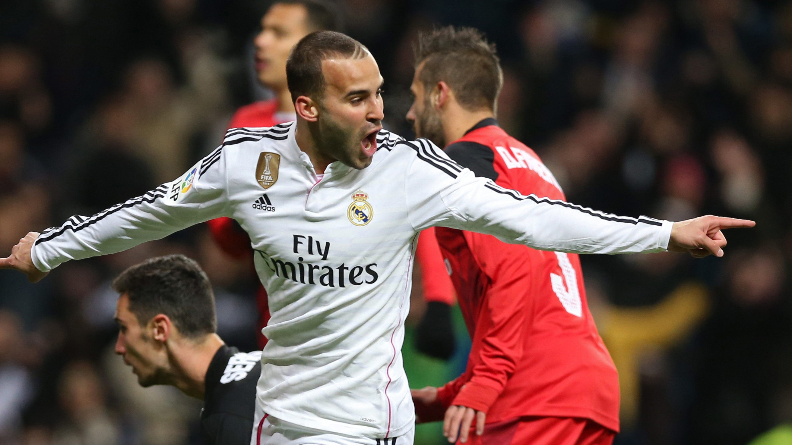

Gennaro Gattuso
"El Sargento de Hierro"
Gattuso es el Sargento de Hierro del fútbol moderno. No necesitaba tatuajes ni un peinado llamativo para imponer respeto: su sola mirada ya advertía que aquel partido iba a ser una batalla. Competía como si cada balón fuese el último de su vida, defendiendo con dientes, uñas y alma. Gattuso encarna la esencia del futbolista callejero: intensidad pura, carácter indomable y cero miedo a nada. El gangster supremo del fútbol.

Pepe
"El Caos y la Elegancia"
Pepe fue un defensa capaz de pasar de la elegancia defensiva al caos absoluto en cuestión de segundos. Su mejor versión era la de un central impenetrable, capaz de anular a cualquier delantero. Su peor versión, protagonista de alguno de los episodios más tensos y agresivos del fútbol español. Pero si algo definió su carrera fue la lealtad y el compromiso total con su equipo. Un jugador con aura de peligro latente, imposible de ignorar.

Radja Nainggolan
"El Ninja"
Con aspecto de guerrero de videojuego callejero, Nainggolan jugaba cada partido como si la vida fuese dentro del campo. Fumador, tatuado y con un estilo inconfundible, el belga combinaba potencia física, llegada, agresividad y un fútbol sorprendentemente inteligente. Su actitud y estética lo convirtieron en un icono de lo salvaje. El Ninja del fútbol europeo.

Gerard Deulofeu
"El Cani Técnico"
Deulofeu representa al cani técnico: descaro puro, desborde explosivo, personalidad de “me la juego porque puedo”. Tenía regate de discoteca, velocidad de persecución policial y una confianza que descolocaba a defensas enteros. Cuando veía un túnel, lo tiraba; cuando veía espacio, lo atacaba; cuando veía un defensa dudando, lo rompía. Un jugador tan imprevisible como talentoso.

Oihan Sancet
"Elegancia de Barrio"
Sancet es la elegancia con código postal de barrio. Con esa zancada de ciervo y una apariencia engañosamente tranquila, esconde una navaja en la bota. Es el tipo que parece que va a cámara lenta hasta que decide liquidarte con una llegada al área letal. Tiene la frialdad del que controla la zona y la calidad técnica para tirar un caño en medio de una guerra. Un mediapunta de etiqueta, pero con el colmillo afilado de quien sabe que en la calle no se hacen prisioneros.

Jesé
"El Príncipe del Flow"
Jesé es el blockbuster que nunca terminamos de ver, el príncipe del flow. Antes de que la rodilla y la música tomaran el control, era un huracán imparable con madera de Balón de Oro y actitud de estrella de trap. El "Bichito" representaba el lujo, la potencia desmedida y el descaro absoluto de encarar a cualquiera sin pedir permiso. Es la historia del talento callejero que tocó el cielo con la punta de los dedos; pura dinamita que explotó demasiado pronto, dejándonos con el recuerdo de un delantero que iba para rey del mundo.